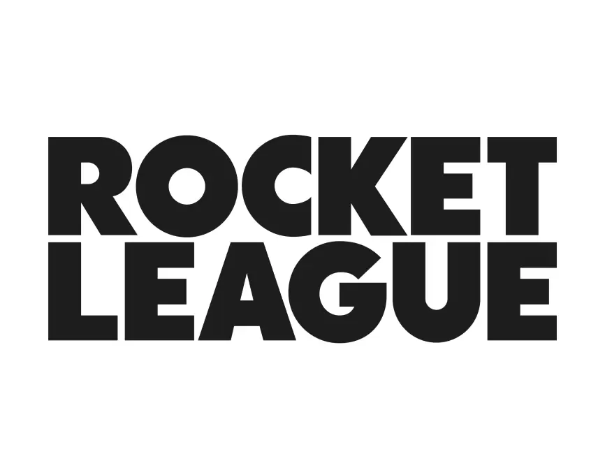

Historia de Rocket League

1. El origen: "El nombre impronunciable"
Antes de ser el éxito que conocemos, el juego tuvo una precuela en 2008 lanzada para PlayStation 3. Su nombre era tan largo y complicado que hasta sus propios desarrolladores, Psyonix, admitieron que fue un error de marketing:
- Nombre Original: Supersonic Acrobatic Rocket-Powered Battle-Cars (abreviado como SARPBC)
- El Concepto: Era exactamente el mismo (fútbol con coches y propulsores), pero con una física mucho más errática, gráficos más simples y un control menos pulido. Aunque acumuló una base de fans muy leal (unos 2 millones de descargas), nunca logró explotar comercialmente.
2. El "Boom": Còmo se popularizò
Tras años trabajando como estudio de apoyo para grandes empresas (como Epic Games o Mass Effect), Psyonix decidió refinar su idea original. El éxito de Rocket League en 2015 no fue casualidad, sino una estrategia maestra:
- El cambio de nombre: Pasaron a un nombre corto, directo y fácil de recordar: Rocket League.
- La jugada de PlayStation Plus: En julio de 2015, el juego se lanzó directamente como un título gratuito para los suscriptores de PS Plus. Esto permitió que millones de personas lo probaran el primer día sin riesgo económico.
- Efecto "Streaming": Su jugabilidad es visualmente muy clara (metes la pelota en la red, no hay armas ni reglas complejas), lo que lo hizo perfecto para Twitch y YouTube. La gente se quedaba hipnotizada viendo las acrobacias aéreas.
3. La actualidad: La era Epic Games
En 2019, Epic Games (creadores de Fortnite) compró Psyonix, lo que marcó el inicio de una nueva etapa:
- Free-to-play: En septiembre de 2020, el juego dejó de ser de pago en todas las plataformas. Esto disparó la población de jugadores a niveles nunca vistos.
- Ecosistema Compartido: Actualmente, Rocket League está integrado con el ecosistema de Epic. Existe el Rocket Racing dentro de Fortnite, donde puedes usar tus coches de Rocket League para competir en carreras. Pero actualmente lo quieren quitar por problemas de Fortnite.
- eSports Consolidados: La RLCS (Rocket League Championship Series) es una de las ligas de deportes electrónicos más estables y emocionantes del mundo, llenando estadios en todo el globo.
Actualidad
Hoy en día, el juego funciona bajo un modelo de Temporadas, con un "Rocket Pass" (pase de batalla) y una tienda de cosméticos. Aunque ya no está disponible para nuevos usuarios en Steam (se movió exclusivamente a la Epic Games Store en PC), sigue siendo uno de los pocos juegos que mantiene una base de jugadores masiva gracias a que su curva de aprendizaje es infinita: es fácil de jugar, pero casi imposible de dominar.